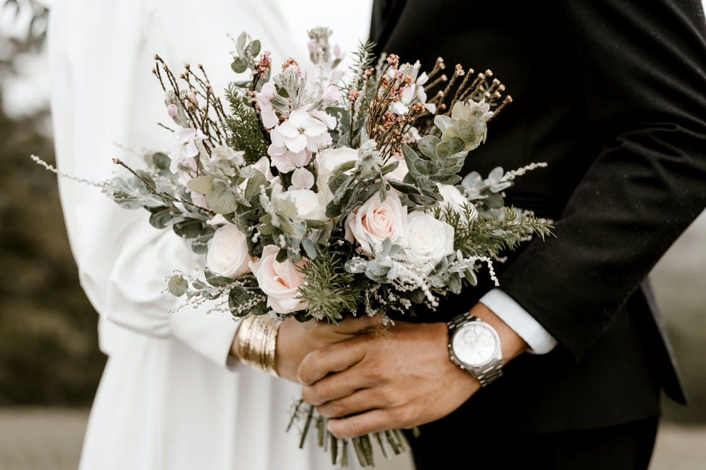
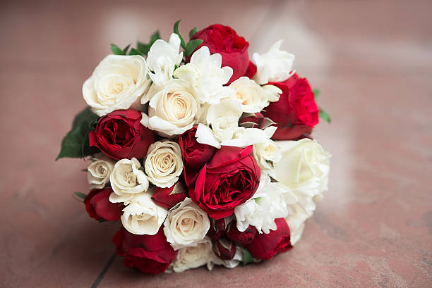
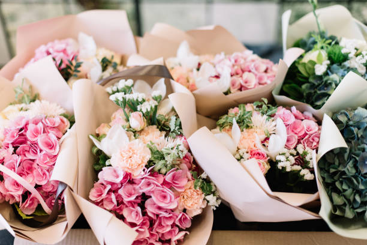
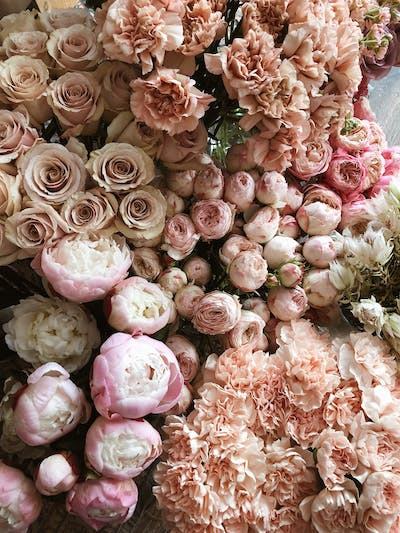

| Nëse shkoni në dasmë, vendosni për zambak të bardhë ose trëndafil të bardhë, sepse simbolizojnë pastërtinë dhe pafajësinë, ndërsa mund t’i kombinoni me disa karafila, po ashtu me ngjyrë të bardhë. Në asnjë mënyrë mos merrni vetëm karafila, sepse do të mendojnë se keni dashur të kurseni. Nëse nuk e njihni mirë çiftin që martohet, blini shpatore, sepse kanë pak karakter sentimental dhe shprehin dëshirën për t’u miqësuar.
Në aranzhmanin e luleve të dedikuara për ndonjë martesë, domosdoshmërish futni bredhkan, e cila simbolizon trashëgiminë dhe jetën e ëmbël.
|  |
 |
Për të njëjtin eveniment, por për kombinime ekzotike dhe ekskluzive mund të zgjidhni bambu, që simbolizon përkushtimin dhe përjetësinë e lidhjes martesore. Madje mund të dhuroni edhe gjembaç, i cili simbolizon mbrojtjen e jashtme edhe të zemrës.Personit që e dashuroni, i dhuroni trëndafil të kuq që simbolizon dashurinë e përhershme me pasion. Trëndafilat e kuq dhurohen edhe si shenjë falënderimi për kryerjen e ndonjë shërbimi, ose kur dikush e ka kryer mirë punën.
Trëndafili i bardhë tregon sinqeritetin, mistifikimin, spiritualitetin dhe paqen.
|
|  |
Trëndafili i verdhë, personit të cilit i dhurohet i ofron mbështetje dhe gëzim, ndërsa në dashuri simbolizon xhelozinë.
Kombinimi i trëndafilave të kuq dhe të bardhë, jep mesazhin e harmonisë në dashuri. Trëndafilat e kuq të zbehtë do të thonë miqësi, përkushtim, afërsi dhe admirim.
|
Trëndafili pa gjemba ka kuptimin e dashurisë në shikim të parë.
Nëse i dhuroni trëndafil të kuq mashkullit, atëherë ia keni dhuruar besnikërinë tuaj.
Vjollcat janë shenjë e devotshmërisë, zymbylat simbolizojnë besnikërinë dhe panënshtrimin, ndërsa tulipanët janë simbol i krenarisë dhe famës.
Lulebore dhuroni dikujt me të cilin keni pasur një zënkë dhe dëshironi të pajtoheni. Për të dashurit lulebora ka kuptimin: “Të kam ëndërruar” ose “A mund të të besoj?”.
|
 |
.jfif) |
Edhe femrat mund t’u dhurojnë lule meshkujve, në mënyrë të njëjtë. Zgjedhja më e mirë për t’i dhuruar lule mashkullit, janë lulet me ngjyra të fuqishme, të kuqe, të verdhë ose të portokalltë.Tek ne do te gjeni zghidhjen idale per partnerin tuaj .Stafi yne eshte gjithmon i gatcem per tju ndihmuar. |